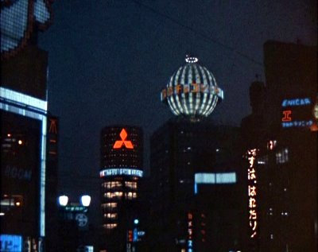
DANGER MAN: Koroshi (Michael Truman: 1965)
(World Backgrounds clip 8251) - Establishing shots of Tokyo as (Ako
Nakamura) girl rushes back to her apartment to make her report to M9.
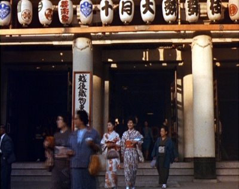
DANGER MAN: Koroshi (Michael Truman: 1965)
Kabukiza theatre, Ginza, Tokyo (World Backgrounds clip E1060) -
Establishing shots Tokyo as Drake arrives in Japan.
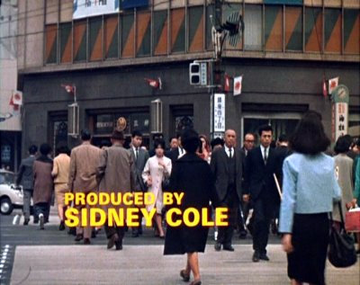
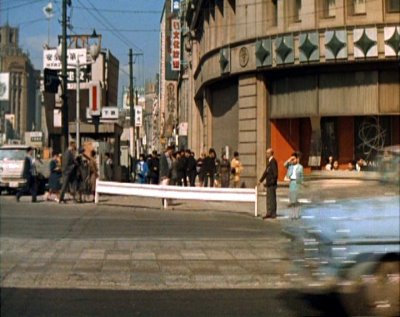
DANGER MAN: Shinda Shima (Peter Yates:1965)
(World Backgrounds clips E1157 and 7078) - Establishing shots Tokyo
where John Drake is following up on his previous investigation.
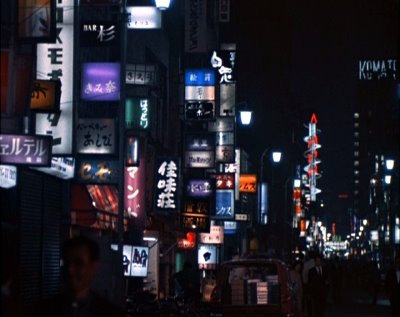
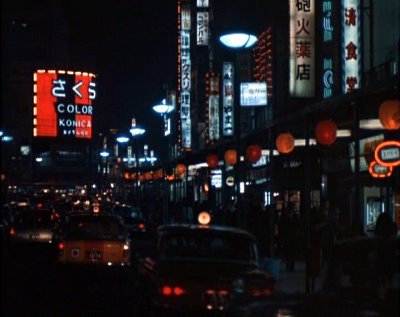
DANGER MAN: Koroshi (Michael Truman: 1965)
(World Backgrounds clips 7038 and 7066) - Japanese Granddaughter walks
through Japanese streets at night to deliver flower to Rosemary.
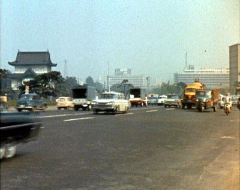
DANGER MAN: Koroshi (Michael Truman: 1965)
Imperial palace seen from Freeway 301, Tokyo - Establishing shots Tokyo
as Drake arrives in Japan.
DANGER MAN: Shinda Shima (Peter Yates:1965)
Imperial palace seen from Freeway 301, Tokyo - Establishing shots Tokyo
where John Drake is following up on his previous investigation.
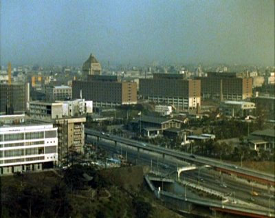
DANGER MAN: Shinda Shima (Peter Yates:1965)
View of Diet (parliarment) from Grand Prince Hotel Akasaka, 1-2,
Kioi-cho, Chiyoda-ku, Tokyo(World Backgrounds Clip 7077) - Establishing
shots Tokyo where John Drake is following up on his previous
investigation.
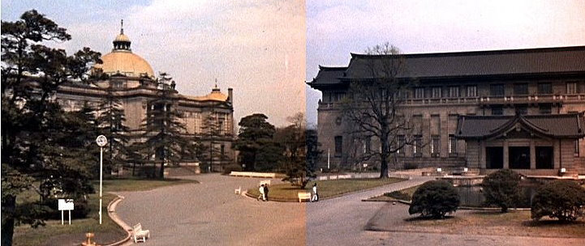
DANGER MAN: Koroshi (Michael Truman: 1965)
(World Backgrounds clip 7067) - Drake goes to library to find out about
the medallion.
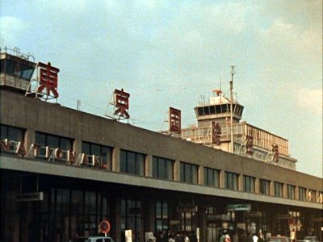
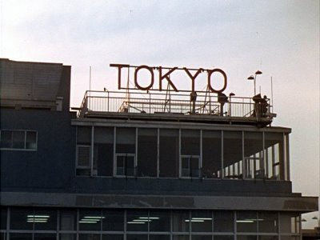
DANGER MAN: Koroshi (Michael Truman: 1965)
(World Backgrounds clip 7079) - Drake arrives in Japan.
DANGER MAN: Shinda Shima (Peter Yates:1965)
(World Backgrounds clip 7079) - Edward Sharp arrives in Tokyo by plane
and Drake already there to assume his identity.